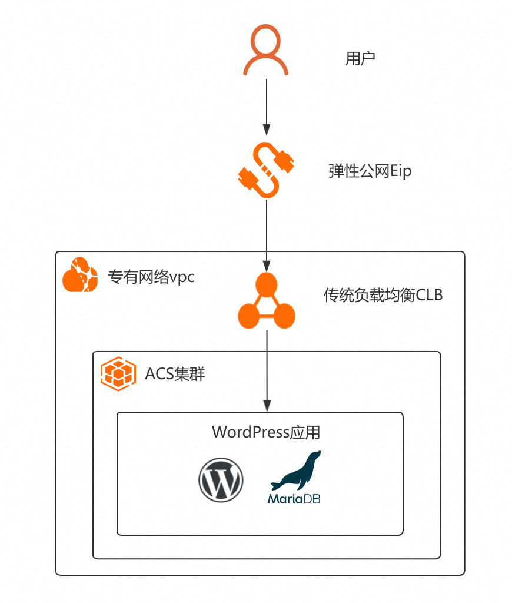
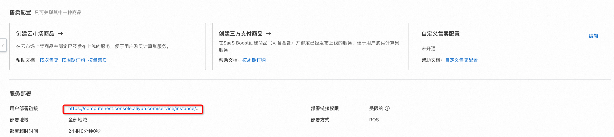
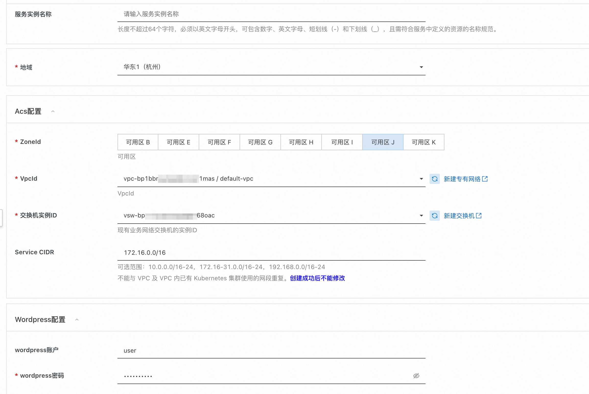
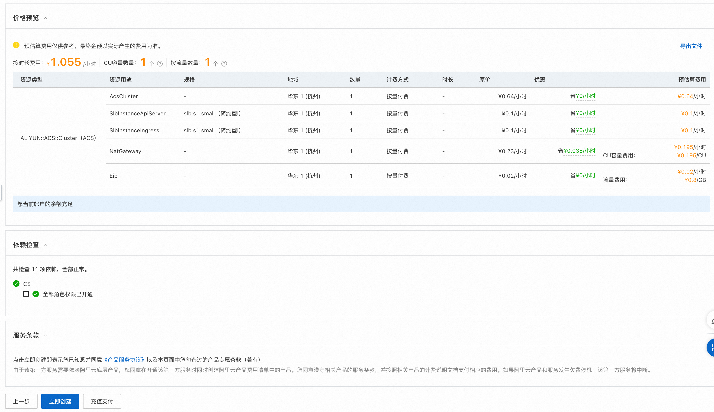
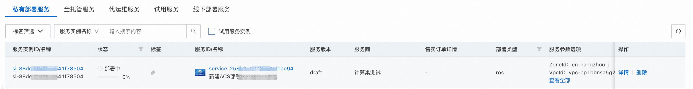
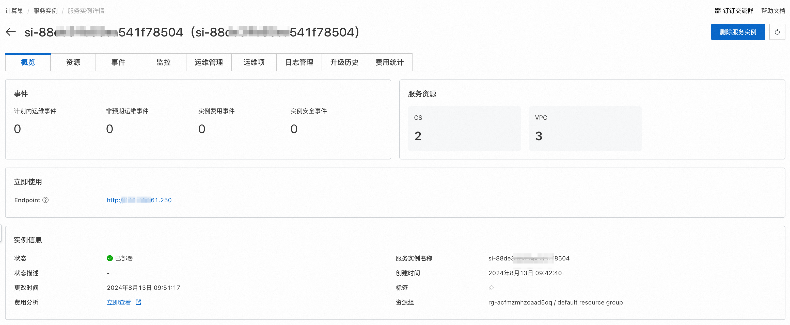
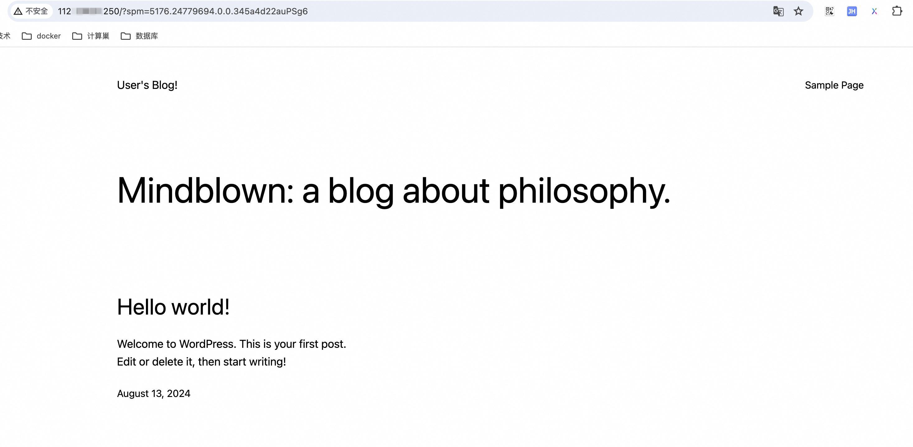
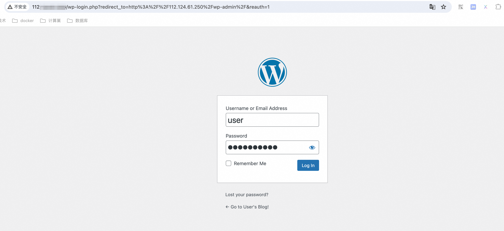

服务模板说明文档
服务说明
本文介绍wordpress服务acs+helm版快速上手流程，本示例对应的Git仓库地址：wordpress-acs-helm-demo。
本示例会自动的构建计算巢服务，具体的服务构建流程为:
- 将wordpress对应的helm chart压缩文件，上传到计算巢仓库中，生成计算巢helm部署物。
- 通过ros模版创建计算巢服务，计算巢服务需要关联helm部署物。
创建过程大约持续1分钟，当服务变成待提交后构建成功。
服务架构
本部署架构为acs集群部署，将helm chart文件通过WordpressComputenestHelmApplication资源部署到acs集群中，通过service绑定的loadBalancer的公网ip进行访问，这个loadbalancer的创建由ack集群自动完成, 在本例中，service提供的对外端口为80，和容器对外提供的端口相同。

服务构建计费说明
测试本服务构建无需任何费用，创建服务实例涉及的费用参考服务实例计费说明。
RAM账号所需权限
本服务需要对ACS、ECS、VPC等资源进行访问和创建操作，若您使用RAM用户创建服务实例，需要在创建服务实例前，对使用的RAM用户的账号添加相应资源的权限。添加RAM权限的详细操作，请参见为RAM用户授权。所需权限如下表所示：
| 权限策略名称 | 备注 |
|---|---|
| AliyunCSFullAccess | 管理容器服务(CS)的权限 |
| AliyunECSFullAccess | 管理云服务器服务（ECS）的权限 |
| AliyunVPCFullAccess | 管理专有网络（VPC）的权限 |
| AliyunROSFullAccess | 管理资源编排服务（ROS）的权限 |
| AliyunComputeNestUserFullAccess | 管理计算巢服务（ComputeNest）的用户侧权限 |
| AliyunComputeNestSupplierFullAccess | 管理计算巢服务（ComputeNest）的服务商侧权限 |
服务实例计费说明
测试本服务在计算巢上的费用主要涉及：
- acs集群部署pod所需vCPU、内存、磁盘费用
- 公网带宽
计费方式包括：
- 按量付费
预估费用在创建实例时可实时看到。
服务实例部署流程
部署参数说明
| 参数组 | 参数项 | 说明 |
|---|---|---|
| 服务实例 | 服务实例名称 | 长度不超过64个字符，必须以英文字母开头，可包含数字、英文字母、短划线（-）和下划线（_）。 |
| 地域 | 服务实例部署的地域。 | |
| ACS配置 | 可用区 | ACS集群所在可用区。 |
| 专有网络VpcId | 专有网络ID，不存在可新建。 | |
| 交换机实例ID | 交换机VSwitchId，对应专用网络（VPC）中的交换机，不存在可新建。。 | |
| Service CIDR | ACS集群中service可用网段，不能与 VPC 及 VPC 内已有 Kubernetes 集群使用的网段重复。 | |
| Wordpress配置 | wordpress用户名 | wordpress管理用户名，默认为user。 |
| wordpress密码 | wordpress管理密码，需进行设置 | |
| ### 部署步骤 |
- 部署链接： 
- 单击部署链接，进入服务实例部署界面，根据界面提示，填写参数完成部署。 
- 参数填写完成后可以看到对应询价明细，确认参数后点击下一步：确认订单。 
- 确认订单完成后同意服务协议并点击立即创建，随后进入部署阶段。 
- 等待部署完成后就可以开始使用服务，进入服务实例详情点击visitUrl。 
- 访问visitUrl可以进入blog的首页，访问visitUrl/admin可以进入blog的后台管理页面：  
服务详细说明
本文通过将部署wordpress服务需要的service、deployment等yaml文件打包成helm压缩包, 上传到计算巢仓库生成helm部署物，在模版中创建ACS集群，将helm部署物部署到ACS集群上。
部署物
helm部署物上传及关联配置在config.yaml中定义，Artifact_1为helm部署物定义，在DeployMetadata中定义了模版占位符{{ computenest::helmchart::wordpress }}与部署物的关联关系。
Service:
DeployMetadata:
SupplierDeployMetadata:
HelmChartArtifactRelation:
'{{ computenest::helmchart::wordpress }}':
ArtifactId: ${Artifact.Artifact_1.ArtifactId}
ArtifactVersion: ${Artifact.Artifact_1.ArtifactVersion}
Artifact:
Artifact_1:
ArtifactType: HelmChart
ArtifactName: wordpress
Description: wordpress HelmChart部署物
ArtifactProperty:
RepoName: ${HelmChartBuilder.HelmChart_1.RepoName}
Tag: ${HelmChartBuilder.HelmChart_1.Tag}
HelmChartBuilder:
HelmChart_1:
HelmChartPath: 'resources/artifact_resources/helm_chart/wordpress-15.4.1.tgz'
RepoName: wordpress
Tag: 15.4.1
模版文件
ros_templates/template.yaml主要由三部分组成:
1.Parameters定义需要用户填写的参数，包括可用区、Acs集群配置、wordpress配置等参数。
Parameters:
ZoneId:
AssociationProperty: ZoneId
Required: true
Type: String
Description:
en: The zone ID.
zh-cn: 可用区
VpcId:
AssociationProperty: ALIYUN::ECS::VPC::VPCId
Type: String
Description:
en: VPC ID.
zh-cn: VpcId
VSwitchId:
Type: String
Label:
en: VSwitch ID
zh-cn: 交换机实例ID
Description:
en: Instance ID of existing business network switches, console-Virtual Private Cloud-VSwitches under query
zh-cn: 现有业务网络交换机的实例ID
AssociationProperty: ALIYUN::ECS::VSwitch::VSwitchId
AssociationPropertyMetadata:
VpcId: ${VpcId}
ZoneId: ${ZoneId}
ServiceCidr:
Type: String
Description:
zh-cn: 可选范围：10.0.0.0/16-24，172.16-31.0.0/16-24，192.168.0.0/16-24<br>不能与 VPC 及 VPC 内已有 Kubernetes 集群使用的网段重复。<font color='blue'><b>创建成功后不能修改</b></font>
en: 'Optional range: 10.0.0.0/16-24, 172.16-31.0.0/16-24, 192.168.0.0/16-24<br> cannot duplicate segments already used by existing Kubernetes clusters in VPC and VPC.<font color=''blue''><b>Cannot be modified after successful creation</b></font>'
Label:
zh-cn: Service CIDR
en: Service CIDR
AssociationProperty: ALIYUN::CS::ManagedKubernetesCluster::ServiceCidr
Default: 172.16.0.0/16
WordpressUsername:
Type: String
Label:
zh-cn: wordpress账户
en: wordpress username
Default: user
WordpressPassword:
NoEcho: true
Type: String
Label:
zh-cn: wordpress密码
en: wordpress password
2.Resources定义需要开的资源，主要包括ACS集群和LoadBalancer资源。MODULE::ACS::ComputeNest::FluxOciHelmDeploy资源类型会将helm部署物部署到ACS集群中，其中{{ computenest::helmchart::wordpress }}是helm部署物占位符，会替换为对应的helm chart仓库地址。
Resources:
AcsCluster:
Type: ALIYUN::ACS::Cluster
Properties:
Name:
Ref: ALIYUN::StackName
VpcId:
Ref: VpcId
ServiceCidr:
Ref: ServiceCidr
ClusterSpec: ack.pro.small
SnatEntry: true
VSwitchIds:
- Ref: VSwitchId
ZoneId:
Ref: ZoneId
PodVSwitchIds:
- Ref: VSwitchId
ServiceDiscoveryTypes:
- CoreDNS
WordpressComputenestHelmApplication:
Type: MODULE::ACS::ComputeNest::FluxOciHelmDeploy
Version: v1
Properties:
ClusterId:
Ref: ClusterId
HelmChartUrl: '{{ computenest::helmchart::wordpress }}'
DockerConfigJson: '{{ computenest::helm::dockerconfigjson }}'
ChartValues:
image:
registry: compute-nest-registry.cn-hangzhou.cr.aliyuncs.com
repository: bestpractice/wordpress
tag: 6.2.0
mariadb:
image:
registry: compute-nest-registry.cn-hangzhou.cr.aliyuncs.com
repository: bestpractice/mariadb
tag: 10.6.12
primary:
persistence:
enabled: true
storageClass: alicloud-disk-topology-alltype
size: 20Gi
persistence:
enabled: false
wordpressUsername:
Ref: WordpressUsername
wordpressPassword:
Ref: WordpressPassword
Namespace:
Ref: 'ALIYUN::StackName'
ReleaseName: wordpress
WaitUntil:
- Kind: Service
Name: wordpress
Namespace:
Ref: ALIYUN::StackName
JsonPath: $.status.loadBalancer.ingress[0].ip
Operator: NotEmpty
FirstMatch: true
Timeout: 300
# 获取service信息，输出到output中
ClusterApplicationResources:
Type: DATASOURCE::CS::ClusterApplicationResources
DependsOn:
- WordpressComputenestHelmApplication
Properties:
ClusterId:
Ref: ClusterId
Kind: Service
Name: wordpress
Namespace:
Ref: ALIYUN::StackName
JsonPath: $.status.loadBalancer.ingress[0].ip
FirstMatch: true
3.Outputs定义需要最终在计算巢概览页中对用户展示的输出，展示wordpress的访问地址。
Outputs:
# 将公网ip做为http返回的地址显示在控制台
BlogPageUrl:
Description:
zh-cn: Blog页面url
en: Blog Page URL
Value:
Fn::Sub:
- "http://${ServerAddress}"
- ServerAddress:
Fn::GetAtt:
- ClusterApplicationResources
- Response
BlogAdminUrl:
Description:
zh-cn: Blog后台url
en: Blog Admin URL
Value:
Fn::Sub:
- "http://${ServerAddress}/admin"
- ServerAddress:
Fn::GetAtt:
- ClusterApplicationResources
- Response